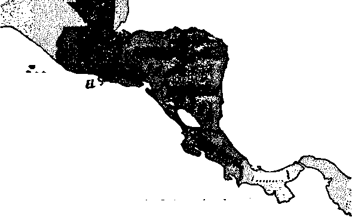

Appreciating God’s Mercy
Can You Read It in the Newspaper?
Controlling the Mighty Mississippi
Most Accidents Don’t Have to Happen!
SEPTEMBER 8. 1963
THE MISSION OF THIS JOURNAL
New* source! that ore able to keep you awoke to the vital litues timet must be unfettered by censor! hip and selfish interests. "AwakeI" has no fetters. It recognizes facts, faces facts, is free ra publish facts, tt lx naf bound by political ambitions or obligations; it Is unhampered by advertisers whose toes must not be trodden on; it is unprejudiced by traditional creeds. This journal keeps itself free that if may speak freely Io you. But it does not abuse its freedom. It maintains integrity to truth.
“Awoke!'1 uses the regular news channel!, but Is not dependent on them. Its awn correspondents are on all continents, in scores of notions. From the four corners of the earth their uncensored, on-the-scenes reports come to you through these columns. This foumart viewpoint is not narrow, but is international. It is read in many notions, in many languages, by persons of all ages. Through its popes many fields of knowledge pass in review—government, commerce, religion, history, geography, science, social conditions, natural wonders—why, its coverage is as broad as the earth and as high as the heavens.
“Awake!'1 pledges itself to ngnteous principles, to exposing hidden foes □ nd subtle dangers, to championing freedom tor at|, to comforting mourners and strengthening those disheartened by the failures of a delinquent world, reflecting sure hope for the establishment of a righteous New World.
Get acquainted with “Awakef’ Keep awake by reading "Awake/"
Publish id Simvltanrwsly tn twb IInittd Statm bt tub WATCHTOWER BIBLE AND TRACT SOCIETY OF NEW YORK. INC.
117 Adems Street Brooklyn 1, N. Y., U. S. A.
AND ?N EXOLANB BT
WATCH TOWER BIBLE AND TRACT SOCIETY
Watch Tow<*r House The Ridgeway London NW. 7, England
N. II. Kjjqm. PreudfflMi Grant flatTefary
Printing this Itauftt 3 800*000 a copy (Australia, fid; South Africa, 3/z£)
“Ja-te*’1' pvWjM A* SOmM 35 latiwfo: far jnia.B be actt w ite <ek*
CLjinjA, fW- Ie rorXiy tffbrrwtoe la
Flmiih. RecK-b. (Sens in, i>t*k 1 tall tn. foPAr.e*. bcnfra Ntitot >! cuptratlM t* *1 in* He luuti
Mon visa, PcrfiW. (MnJUL lapta. tal'J axpirea*
••«tlilT--Cehu-V]Mj»rb fbtn«e. Eoctnu. Roretr. Ha-t Idin. Fodlth Tattji, IkraJnten
W RlwerlpUcn for
MrhA U.S., 117 A^tMi StB’^Uyr 1* > f.
Amfril a. :i irtrfcrt M . KiiatnfttkJ. N ft.W, CaiMa. 160 B'J'ifti&rd Aw . j), Db\.
Bullate. hitrh T>vtr Tte Ix^don N'V 7
M»w 1mJm< *21 N.r^,h EW . 8 1
iMth AfrkM, PnTit* Bn; 2. P 0 Xl ttrSfcLltln. T»J.
Mdar&S ite >hiw ratea.
ralea 'iaca
Si KA
Si
7/7/-
7(1^ Erittftd if iciittfr at Brroitji, S.Y.
Frlcttd t* Effkt1*-:!
CHANGES OF ADDRESS ahaaW rette u tUrtv iip htfora fretr aadaf dah. Gin st vair ala and m» aid rm ( f poulVa. >♦« all tediatt iRtel). Wrta Watch Tawar. Watch Itwar Much, Tin NldiM*. LmIbr N.W. 7. EmUm.
VW UH* InmlafiM »ad la " Aw*u I" l> tki New WarM I’tteJatlaa at Ite 8dr terlftvr*. 1961 teWM Wtea a*h4c taulaHani ara itad ite Wtotete qmtel; «hl amr teMnd the altattoar
AS’ - AMetk'An St ar 4a nJ Venice AT - An AuM.'kun Traolati&n A V Aat her VewlMi < H U J Du - J N IM'ty f vr-kkn
L'y CatS lie Dtw rtnloa ED - TJij E:3iHia!lf JP - .’ewiitn ?jhiJ:*ikn Sac Le - i*iac Le*wr * vetu.on
MO - MtAn'a If rin Ko - J B « itT"loa
KS *■ RfT|sH stirxia^ Vteakri Yp - Zubei: IrJM'a venion
CONTENTS
Can You Head It in the Newspaper? 9
Controlling the Mighty Mississippi
Most Accidents Don’t "Have to Happen! 16
Effective Use of A wake I Articles
They Have Wings but Cannot Fly 21 I
’The Problem of Unification
“Your Word Is Truth” Works That Justify and Works That Do Not
Watching the World
Volume XLIV London, England, September 8, 1953 Number 17
Do You l/STE/V to Counsel?
AN AUTOMOBILE was passing another car on a curve. A truck carrying twenty-seven tons of steel was coming from the other direction and straight toward it. A family of five was wiped out in the crash, because the counsel “No Passing—Curves Ahead" was ignored. In 1963 over 30,000 lives were taken by automobile accidents caused by those who violated the traffic laws, including speeding and driving under the influence of alcohol. This, |n spite of the fact that the government spends millions of dollars each year to counsel the citizens to respect the laws and save lives. The proverb says: “The way of the foolish one is right in his own eyes, but the one listening to counsel is wise.”—Prov. 12:15.
Do you listen to counsel? In recent years much information has been published linking lung cancer, heart ailments and other diseases that shorten the life of man, with the use of tobacco, yet the majority do not listen, and the death rate from these maladies continues to climb. The youth of the nation at home, in school and at church are constantly counseled against immorality and other crimes against society; yet, do they listen? Many do not, and much sorrow follows for all concerned.
How can you listen to counsel? Listening involves thinking while we hear or read something. A highway sign saying, “Slow Down—Dangerous Curve Ahead— No Passing,” should convey to your mind the thought of what might happen if you ignore the warning. Yes, the “way of the foolish one is right in his own eyes,” but does it save lives? When there are warning signs on machinery, household appliances, chemicals or medicines, the wise one will heed them. While one is generally not held accountable for accident damage or injury, the aftermath of accidentally injuring oneself or another or taking a life due to ignoring wise counsel can be grievous. Why not make an examination of your own habits? Do you listen to counsel?
Do you as a parent listen to counsel? When your child is disobedient, do you do what is right in your own eyes, not correcting the child, letting him get by with it or thinking that you “love" the child too much to punish him? “The one holding back his rod is hating his son, but the one loving him is he that does look for him with discipline.” (Prov. 13:24) Many parents ignore the whereabouts of their children, letting the child arrange his own itinerary, with no set work schedule or deciding by the parents as to where the child should be or what he should be doing. A Boston Municipal Court judge linked juvenile delinquency with this, saying: “Parents overindulge children and allow them to do as they please.’’ The Bible states it this way: “The rod and reproof are what give wisdom; but a boy let on the loose will be causing his mother shame.” (Prov. 29:15) Do you heed this counsel?
Counsel comes to us from numerous sources: Parents, teachers, job supervisors, friends and family, ministerial overseers and, above all, God’s written Word, the Bible. Our attitude toward listening to and profitably using such counsel has much to do with our personality. Some object or even rebel against counsel, not because of the counsel itself, but because they do not wish to be in the position of one that needs counsel. They think that it puts them in a position of inferiority or that they are being restrained. But, really, when you accept counsel you prove yourself wise. The Christian apostle Paul reminds us that “no discipline seems for the present to be joyous, but grievous- yet afterward to those who have been trained by it it yields peaceable fruit, namely, righteousness." (Heb. 12:11) So in all things the truly humble person will welcome advice and counsel, yes, even discipline.
But what if the counsel is severe? Would you throw your tools down and quit when counseled in a manner that you might think too severe? Sometimes we may think that the counsel given is exaggerated or exceeds the need. But, then, is it not better to overemphasize, especially when it involves the life and happiness of one? A small sign along the highway might tell us of a danger just as well as a large one, but when the danger is great there are often many large signs, painted varied colors, that repeat the warning. Likewise Jehovah caused his written Word to repeat the same warning many times in view of the tendency of man to ignore warnings.
The source of counsel is important too. Especially is this so in religious matters. The man Jesus on earth acknowledged his reliance on his Father in heaven. He quoted from the inspired Bible; he took counsel from its writings. He said in prayer to his God and Father: “Your word is truth.” (John 17:17) Certainly his course was a wise one. He made provision for the extending of this good counsel to many others when he sent forth his followers to teach others to “observe all the things I have commanded you.” (Matt. 28:20) How much better to go to God’s Word for guidance than to be like the foolish one who does what is right in his own eyes!
So when you next receive counsel by a public notice, a telltale sign that indicates that something is about to break loose, a warning on a bottle, a parental admonition, a husband’s loving counsel or even a stem rebuke, remember the words of the proverb: “The way of the foolish one is right in his own eyes, but the one listening to counsel is wise."—Prov. 12:15.
APPRECIA TING
JUSTICE is a noble quality, -We admire those who exercise it, for their dealings with others are governed by what is in harmony with truth and righteousness. But who is the person that can measure up perfectly, that never transgresses, but always does what is right? Is it not true that “we all stumble many times”? Therefore, how pleasant it is when justice is seasoned with mercy!—Jas.
3:2.
Mercy not only is "compassionate treatment of the unfortunate,” but also includes the disposition to forgive and the withholding of punishment that strict justice might require. Is it not wonderful that Jehovah God, who "is a lover of righteousness and justice,” seasons his justice with mercy? How grateful we should be that “Jehovah is merciful and gracious,” and that "he has not done to us even according to our sins; nor according to our errors has he brought upon us what we de-scrve”!_ps. 33:5; 103:8, 10.
But this subject of God’s mercy may well raise questions in the minds of some. Just how are God’s mercy and justice balanced? Can one indulge his weaknesses and count on God’s mercy in his behalf? Upon what basis does God either extend or withhold mercy?
It is essential to our everlasting welfare that we understand and appreciate God’s mercy. If we understand how it is administered, then we will know what steps to take in order to qualify for receiving it. Then, when we take those steps, we can have the grand assurance of God’s merciful forgiveness of our sins. An understanding of God’s mercy will also make it possible for us to imitate him in our dealings with others, enabling us to show mercy to others, even as God does to us.
Upon what bash h it extended? Who qualify for it?
The Wisdom of Mercy
Today there is a great deal of misunderstanding concerning mercy. Many interpret it as an evidence of weakness. They feel that others will take advantage if it is exercised. But, to the contrary, mercy that is administered wisely can instill love and devotion.
For example, it is said that when making a tour of his camp after an exhausting day of battle Napoleon found one of his sentries asieep at his post. Strict justice would have required the death penalty. But what happened? According to the story, Napoleon picked up the rifle and stood guard until the dozing sentry awoke. You can imagine how the man must have been shaken to see his illustrious general standing guard, being fully aware of the penalty for his misdemeanor. However, Napoleon relieved the soldier’s anxiety, acknowledging that he "had fought hard, and marched long." But he cautioned him, "You will be more careful another time.”
Is it not likely that this incident instilled devotion in the man for his general? And was not that the intention of the general, to make a loyal and better soldier by showing him mercy? So there must be a purpose for extending mercy. It should be a long-range view with rehabilitation as the goal. Its purpose should be to develop within the offender love, devotion and integrity. With this in mind, the one exercising mercy must take into consideration the attitude of the offender. There is a possibility that allowing his offense to go unpunished may do more harm than good.
Seasoning with Mercy
So it is important to remember that mercy seasons justice. It does not replace justice. Rather, mercy takes into consideration human imperfections, and makes justice more palatable by providing allowances for sins and shortcomings for which strict justice would require punishment However, if justice is flouted by failing to administer correction to help the offender appreciate the error of his way, such overlooking of transgressions would not be mercy; It would amount to negligence or, perhaps, sentimentality.
If, for example, a parent never punished its child, but always overlooked or forgave its misdeeds, that would not be mercy. In such a case justice would not be seasoned by "forgiveness, but would be spoiled by it. It would be like pouring the entire contents of the salt-and-pepper shakers into a meal! The meal, instead of being improved, would be ruined. And so a child can be spoiled by parents that withhold from it the "rod” of correction.—Prov. 13:24.
This does not mean that the withholding of punishment from a child is never an evidence of mercy. If there is deep sorrow and true repentance, forgiveness would be in order. In -such instances a withholding of punishment will help the child appreciate that the parent is loving and understanding and, as a result, will cause the child to do better in the future. Thus mercy would develop within the offender the refreshing fruits of love, devotion and integrity.
God’s Justice Seasoned with Mercy
In Jehovah God, “the Father of tender mercies,” the quality of justice is seasoned to perfection with mercy, “Jehovah, Jehovah, a God merciful and gracious, slow to anger and abundant in loving-kindness and truth, preserving loving-kindness for thousands, pardoning error and transgression and sin.” However, God’s mercy does not violate his justice, as the rest of the scripture shows. “But by no means will he give exemption from punishment, bringing punishment for the error of fathers upon sons and upon grandsons, upon the third generation and upon the fourth generation,”—2 Cor. 1:3; Ex. 34:6, 7; 20:5, 6.
Here we have perfect balance. Strict justice would require punishment for all of man’s sins and shortcomings, but God’s mercy intercedes. It takes into consideration man’s weaknesses and limitations, and makes allowances for them. This is not a spoiling of justice, because God never pardons “error and transgression and sin’’ unless there is a good reason for doing so. The sinner must first give evidence of sincere repentance, and only upon this basis does God season his justice with mercy. What a just and, yet, loving way to deal with his people!
With God mercy is a continuing program with a definite goal. That goal is to rehabilitate the wrongdoer, and to that end mercy is continued only to those that react with genuine appreciation at each step
of the way. By correcting these mildly, or by withholding punishment altogether, Jehovah lovingly guides them in the pathways of righteousness. However, to unrepentant ones that rebelliously reject his ■ counsel God promises that “by no means will he give exemption from punishment.”
And so, true to his Word, when the nation of Israel stubbornly turned to false worship, Jehovah punished them by allowing them to be subjugated by enemy nations. An outstanding example was when almost the entire nation was taken captive to Babylon for seventy years. This not only served to punish those wicked Israelites, but the effects of that punishment were felt upon their descendants, even “upon the third generation and upon the fourth generation.”
Everlasting Life Through Mercy
So instead of bringing Jehovah's just punishment upon ourselves, and perhaps upon our children, how much wiser it is to take the necessary steps to obtain His mercy! Due to imperfection inherited from our first parents Adam and Eve all of us alike are sinners, and strict justice would therefore require our death. (Rom. 6:23) Happily, however, Jehovah God has provided a basis for forgiving the sins of repentant mankind by giving his only-begotten Son Jesus Christ as a ransom. Concerning this provision the apostle Paul explained: “By means of him we have the release by ransom through the blood of that one, yes, the forgiveness of our trespasses, according to the riches of his undeserved kindness.”—Eph. 1:7; Acts 13: 38; Luke 24:47.
Truly, God’s provision of his Son constitutes the greatest single act of mercy in all history! It was not something God was obligated to do, but he did it because of his love for mankind, as the familiar scripture describes: “God loved the world [of mankind] so much that he gave his only-begotten Son, in order that everyone exercising faith in him might not be destroyed but have everlasting life.”—John 3:16; 2 Pet. 3:13.
Think of it! Because of the intervention of God’s mercy the hope of everlasting life in a new order of righteousness is opened to all mankind. How happy we should be that God’s justice is seasoned with mercy! However, to avail ourselves of its benefits we must do something. The apostle Paul urged: “Let us, therefore, approach with freeness of speech [in prayer] to the throne of undeserved kindness, that we may obtain mercy and find undeserved kindness for help at the right time.”—Heb. 4:16.
Accepting God’s Mercy
It therefore becomes evident that to obtain mercy from God it must be sought after. One must go to Jehovah in prayer and humbly confess his sins, and, if one does, the Bible assures that he will find that God “is faithful and righteous so as to forgive us our sins and to cleanse us from all unrighteousness.” Nor does it matter how serious our sins have been, for, if we are walking in the light, ‘the blood of Jesus cleanses us from all sin.’—1 John 1:9, 7.
But what if afterward one sins again? What if certain evil practices have such a hold on a person that he repeatedly lapses into them? Will God’s mercy cover such sins? God reads the heart and if he sees that a person truly abhors the sin and is sincerely trying to reform, his mercy even covers repeated lapses due to human weakness. When Peter asked how many times he should forgive a brother that sinned against him, did not Jesus say, “Not, Up to seven times, but, Up to seventy-seven timpg”? So could we not expect that Jehovah would be equally as forgiving, that he would grant forgiveness many times for the same shortcoming if each time the wrongdoer repentantly sought forgiveness? —Matt. 18:22.
COMING IN THE NEXT ISSUE
• Happiness for Those Who Suffer Afttktlan.
• How Well Do You Read?
• Blue Laws—A Cause of Contention.
• Seat Belts Save Lives.
However, none should conclude from this that one may give up and let sins and lusts of the flesh have their way, and bank on God's mercy to see him through and into the new order. Those that qualify for God’s mercy must resist sin, and, though they fall, they must recover and stand erect again. “For the righteous one may fall even seven times, and he will certainly get up,"—Prov. 24:16.
When you fall short again and ask God for mercy, what will you do? Will you go on condemning yourself, brooding over your shortcomings and suspecting that God holds them against you? Do you think that would be pleasing to God? If someone humbly asked forgiveness of you, would you desire that they continue to torment themselves over the evil they had done to you? In fact, would you not be burt that they did not trust your forgiveness, but felt you still held something against them? If you do not keep account of an injury, can you not be confident that God, who is love, also does not?—1 Cor. 13:5.
So trust in God’s mercy. Always feel free to approach his throne of undeserved kindness with your problems. But then show appreciation for his mercy by refraining from the wrong conduct of the past.
Copying God’s Mercy
Appreciation of the Father of tender mercies should move us to strive to be like him. That means thinking, speaking and acting mercifully toward our families, neighbors, friends, yes, toward all men. If we are to receive mercy, we must show it “For the one that does not practice mercy will have his judgment without mercy. Mercy exults triumphantly over judgment.” Jesus also showed the need of being merciful when he said that God forgives only those that are forgiving toward others.—Jas. 2:13; Matt. 6:14,15.
If we were judged strictly on the basis of right and wrong, none of us could stand; we all would prove unworthy of life. But happily God’s mercy enters in on our behalf to triumph over judgment and see us through. However, to receive this mercy from God we must practice it toward others. We must be like God, That does not mean to be weak and unprincipled and to overlook everything, but it means to adopt God’s view of mercy and apply it as he does. We must endeavor to become balanced as he is, never spoiling justice with an overdose of mistaken kindness, but seasoning it to just the proper degree with mercy.
Our appreciation of God’s mercy should have the effect of making us stronger and more dependable servants of his. It should move us to let others know of his merciful provision of the ransom, which opens before obedient mankind the prospects of life in a righteous new world. How happy we should be to know that Jehovah is “a God merciful and gracious, slow to anger and abundant in loving-kindness”! A heartfelt appreciation for God’s mercy is indeed essential for everlasting life.—Ex. 34:6.
TODAY, when one is very busy, one often remarks: “Why, I hardly get time to read the newspaper!” This indicates the part newspaper reading plays in the daily life of many people. We could hardly imagine today’s world without newspapers. Some feel it is almost a catastrophe if their paper fails to come for one reason or another.
It is said there are about 30,000 newspapers, with a total circulation of some 450,000,000 copies throughout the world. In Denmark, for instance, about 180 papers are published every day, with a total circulation of 1,500,000. As there are over 1,500,000 households in the country, it means, on the average, about one newspaper for each household. And the papers are read. Studies show that each paper is read by two to four persons in Denmark. Only 2 percent of the adult population there do not read any newspaper’
It is evident, then, that a tremendous interest exists tn this news medium, a medium that can significantly affect the thinking of a large part of the world’s population. It is therefore pertinent to ask: Is the newspaper instrumental in spreading vital truths? Can you trust its information? Is its information sufficient for you? Are you right in rejecting books and other specialized magazines with the argument, “I have the newspaper; it is enough for me”? Can you really read it all in the newspaper?
What You Can Read
You can read much that is » beneficial in the newspaper.
There is domestic and local news, the opinions of different individuals on current issues. You are kept informed about prices of various things as well as opportunities for employment. There may be a hobby section, a woman’s section, a garden section, a sports section, much advertising and, of course, the entertainment material.
Yes, the paper does give much valuable Information, but you will also want to exercise care to read it the right way. To do this you should know how news is gathered and selected.
Modern means of communication, such as the telegraph, telephone, teletypewriter, and telephoto, together with modern printing presses, make it possible from the technical standpoint to render good service to the readers with news from all parts of the globe. However, the prerequisite for a good paper is still that correspondents, reporters, journalists and editors must be conscientious, accurate, careful and honest in their writing. But you cannot take it for granted that they always are. We should not think that a truth is established for all time if we can say, "It was in the paper, I read it myself." Newspapers do not always merit this confidence.
Limitations
Though the press is free from censorship in many countries, it does not mean we should overemphasize the expression “the free press.” When it comes to foreign news, the newspaper is dependent on news agencies, unless it has its own correspondent on the spot, and then it is dependent on him. The agent for a piece of news will leave his mark and personality on the report. Therefore, if you read an item from a certain country—for example, one involved in the “cold war”—you must consider whether it comes from an American news agency or from a Soviet news agency. The two agencies will tell the same piece of news in their own way. About this, Danish editor *Eigil Steinmetz writes: "However much the American agencies endeavor to be independent of the U.S. government’s policy . . . their news service must necessarily be marked by the American origin,—not colored, not twisted, only marked.” About news from South America, which is obtained in Denmark from American sources, he says that it is difficult not only for the ordinary newspaper reader to discover where the news ends and the propaganda begins, but also for a trained newsman.
Actually, few newspapers are truly independent The reader who desires to be correctly informed should be aware of the interest his newspaper has in serving a particular policy or group, such as a political party. Frequently the editorial page will enable the reader to determine what this inclination is. This can have a decided influence on the news. A paper that favors one political party over another will not be quick to criticize the party it favors, whereas events or actions no worse on the part of the opposing party will be severely attacked.
If there are no political Interests to care for, there are other interests to consider. AH papers have the readers, the public, the majority, to consider. By “the majority” we do not mean the majority of the entire nation, but the majority of the group to which the newspaper addresses itself. This majority has a peculiar influence on the press. Why so? Because the running of a newspaper is business. The paper must sell. Not that the profit from the sale is the most important source of Income, because it usually is npt. Most of the large papers live mainly by selling advertisements. But the price of an advertisement depends in large measure on the circulation of the paper. The more people who read the paper, the more income an advertisement ' ■to the paper, as the rate per line of advertising can be increased as more people are reached. That is why papers often take part in what can be called a “circulation race.” Hence, the paper must be careful not to print material that would be offensive to these advertisers and cause them to withdraw their advertisements, damaging the prime source of income for the paper.
Also, because of the necessity to build up circulation, the paper must have material that appeals to the public it seeks. Therefore it will be difficult for it to fight for ideals not favored by the majority of its readers, and frequently it is the voice of the minority that is correct The paper must also write about the things people are occupied with, and trifles are often of more interest to the majority than thorough information about world events, the big and vital issues. Many newspapers devote space to trivialities far out of proportion to their importance. This fact caused one European editor to write, prior to World War II; “While the ghost of a new world war threatens, while nations are being suppressed and open cities are ruined by air raids, interest is concentrated on the life of movie stars, sport events, princely weddings and princesses’ childbirths. The current psychological, economical, culture-historical, religious and worldpolitical revolutions pass most people unnoticed. Or they only receive a shrug. It seems as if our time has completely lost the ability to distinguish between important things and unimportant ones.”
This willingness to cater to trivialities in order to build up the number of readers explains why a superior newspaper may often have much less circulation than another in the same city which is devoted to sensational exposes of the lives of prominent people. An alert critic of the Danish press, H, B. Brecker, in his book The Newspaper—Enlightenment or Business?' very strikingly writes: “In a well-assorted variety shop there has to be something to suit every taste. It makes the trade increase! The papers need sensations! And beauty contests make sensations (how many girls have they spoiled?), so do balcony flower contests, motor car races (exhausted, drowsy car drivers racing the country as madmen!), bicycle races, walking races for waiters carrying trays with glasses and bottles, and similar insipid foolishness.”
So while it is true that the press does exercise a great influence on its readers, It is also true that the system works the opposite way because of the financial dependence of the newspaper: the readers exercise an influence on the paper. To a degree they determine what will be put in the paper, with the result that a great deal Is put in that has very little value. This is bad. However, it is worse when a newspaper also helps to affirm the readers in their errors merely because it wants to keep its circulation high.
No, the newspaper is not the all-pervasive educator of public opinion, as some idealists believe it to be. The paper talks about things people like to read about, and it often avoids things that it believes people do not want to read about, even if such information is important. It plays up to public opinion and too often voices ideas that the majority already accept. The newspaper hesitates to castigate the majority. If it castigates anybody, it is often the minority that has little or no influence on the circulation, a minority that the majority enjoy seeing the paper show up. No paper can willingly show up the majority of its readers continually, for it is this majority that buys the paper. So the very nature of the newspaper business is a decided disadvantage to the cause of truth. .
“Managed News”
In countries where the government exercises complete control over the newspapers, censoring what is written, the public rarely will get to see both sides of an issue. The news can be distorted as the government sees fit, right or wrong. Individuals reading the papers in such countries will want to exercise great caution.
In countries where there is a “free press,” where there is no outright censorship, there can be another form of press control that makes possible the slanting of news. This is called "managed news.” One example of this was recently commented on by Arthur Krock, New York Times columnist with fifty years of experience in the field: “A news management policy [in the United States] not only exists but, in the form of direct and deliberate action, has been enforced more cynically and boldly than by any previous Administration in a period when the U.S. was not in a war or without visible means of regression from the verge of war. ... In the form of indirect but equally deliberate action, the policy has been much more effective than direct action in coloring the several facets of public information, because it has been employed with subtlety and imagination for which there is no historic parallel known to me.” Concluded U.S. News and World Report of April 15, 1963: “Managing of news is a big and growing business in Government Newspapers, radio stations, TV stations, magazines and public speakers all get attention from officials whose business it is to try to manage the news. Thousands of individuals and millions of taxpayer dollars are used in this effort to guide and control the news,” Since this is so in a country that has as its foundation the freedom of the press, speech and assembly, what can happen in a country where the constitution does not guarantee such freedoms?
What You Cannot Read
If a matter is fairly well covered in a reliable newspaper, the alert reader can get a general idea of what is happening. He should, however, always keep in mind that the average paper is not truly independent and for that reason must have had certain things to consider which might make its reporting not completely objective. So one who wants to be objective and thoroughly informed on a particular subject must go to books, magazines or other papers that treat the matter as a special subject, getting a cross-section of opinion. This is especially true if the subject is controversial, as with religious issues. When it comes to true enlightenment on a subject of such Importance, you cannot read it in the newspaper, but you must go to specialized sources dealing with religious matters.
One who wants to know the truth about a minority or a case that has had bad publicity in the newspapers and toward which the general public is critical should doubt that he will learn the truth by reading the newspapers alone.
Does this mean you should stop reading newspapers? By no means. If you are an alert reader you can get much valuable information from the paper as well as enjoyment, especially if you have given attention to the way news is gathered and the group to which the paper Is Writing.
The newspaper has its proper place as a channel of information. It enables one to get a fair picture of what is going on in the world. However, it is limited because of social, economic and political pressures. Also, while it can tell you what is happening, most of the time it cannot tell you why. So you cannot be content with reading newspapers only. This would not be complete and may even give you a distorted view of events. A balanced view of newspaper reading is essential to one who is truly interested in being enlightened on world affairs. Such ones appreciate their daily newspapers, but are also aware that they cannot read it all in the newspaper. Hence, they devote only enough time to newspaper reading to acquire the information they seek, providing time for other sources of information that will balance their needs.
CONTROLLING
Control Plan
Until progressive floodcontrol measures were begun by the Mississippi River Commission, the
SNAKING its way across the I United States from north to south, the Mississippi is unquestionably the greatest river in North America. Draining two-fifths of the United States and parts of two Canadian provinces, it acts as the trunk to a vast 14,000-mile inland waterway. The prodigious volume of water that surges down it during times of heavy rain makes the controlling of this mighty river a Herculean task. Failure to keep it under control would be disastrous for many of the cities and farmlands that hug its banks.
In 1927 swollen tributaries transformed the Mississippi into a raging, uncontrolled torrent that brought devastation to 26,000 square miles of land. It caused the death of 246 humans and countless domestic and wild animals. It brought suffering to approximately 637,000 people. What the Mississippi did in that year is regarded as the greatest peacetime disaster in the history of the United States.
Spurred by the destruction caused by the Mississippi in 1927, the United States Federal Government enacted the Flood Control Act of 1928. This act committed the Government to a definite program of flood control. Its efforts were implemented by the Mississippi River Commission, which had been formed in 1879. This executive body recommends the policy and work programs for control of the river, conducts public hearings and strives to improve flood control and navigation projects. Its policies are carried out by the United States Army engineers.
building of levees was about the only effort made to control the river at flood
stage. These that average Their banks grass and in
are great mounds of earth twenty-one feet in height, are sown with Bermuda some places are reinforced
with concrete or wooden walls to prevent them from being eroded away by the water. The purpose of the levees is to heighten the banks of the river so that it will be able to contain more water without overflowing. The Mississippi’s total system of levees is 500 miles longer than the great wall of China, which stretches for 1,400 miles. But, as proved by the flood of 1927, more than just levees is needed to control that great river.
The present plan for flood control is designed to control a flood 20 percent greater than the one in 1927. This is being done by making use of reservoirs to restrain the flow in the tributaries of the Mississippi, by levees, cutoffs to speed the flow of water and lower flood stages, revetments to protect flood-control structures, and floodways that divert water from the river.
These are the principal means now being employed to control the Mississippi.
Bow the Plan Operates
Disposing of great quantities of water draining into the Mississippi is hindered by the many bends of the river as it winds its way across the countryside. The bends cause the flow of water to slow down and thus reduce the river’s ability to receive large amounts of inflowing water without rising dangerously high. Man-made cutoffs seek to overcome this problem. These are channels that’ are dug to straighten the bed of the river, eliminating many of its bends. By flowing straight across the countryside instead of meandering back and forth, the distance traveled by the river Is shortened and its flow speeded up, reducing its water level by as much as six to twelve feet. For boats traveling between the cities of Memphis and Baton Rouge, cutoffs have reduced the distance by 170 miles.
When the flow of water becomes too heavy, floodways are used to divert some of the water. Just below the town of Natchez in the State of Mississippi there are two floodways. These are capable of handling approximately one-half of the water in the Mississippi. They empty into the Atchafalaya River. If that is not enough to keep the Mississippi under control, an amount of water that is equivalent to what flows on the average over Niagara Falls can be diverted through the Bonnet Carre Spillway into Lake Ponchartrain and from there into the Gulf of Mexico.
Revetment has to do with stabilizing the banks of the river. This Is done by making use of a flexible concrete mat that is especially usedon the banks where the river curves. The concrete mat is fastened to the bank and the loose end is carried out a certain distance into the river where it is released and allowed to settle to the bottom. As' it falls it conforms to the contour of the bank and river bottom, protecting the bank from eroding water.
An important feature of controlling the Mississippi is to control the flow of water In its tributaries. A splendid example of . this work is the Yazoo Basin, which drains over 4,000 square miles of the northwest quarter of the State of Mississippi. It has four flood-control reservoirs, a system of levees, auxiliary channels, pumping plants and floodgates. Barren hills are being planted with 45 million seedling pines to create a forest covering that will help the land to absorb rainwater instead of allowing it to run off.
Each of the four reservoirs of the Yazoo Basin is located on a small river and acts as a storage place for that area; During times when there is flood danger on the Mississippi, water is held in these reservoirs until the danger has passed.
As floodwaters flow past the city of New Orleans, the people there are especially watchful because the city is so low in elevation. It requires a good floodcontrol system. Shaped like a saucer, with high ground on its outside edges and low ground in its middle, the city could be devastated by an uncontrolled river. The highest area is pext to the river, fourteen feet above sea level, and the lowest area in the middle of town is four feet below sea level. The city has a system of giant pumps to remove water. Around the city is a protective levee that runs for almost 128 miles. Further protection is given New Orleans by the Bonnet Carre Spillway to the north of the city.
Model of the River
A unique model of the Mississippi River has proved to be of incalculable value in controlling the rampages of the river. It is located on a site of 200 acres near Jack-son, Mississippi. Molded of concrete, it is strong and durable. The scale to which it was built is one inch for every 2,000 feet. The vertical dimension is one inch for a hundred feet.
Great floods on a small scale can be created in minutes and their effects studied. Efforts can then be made to strengthen places on the river that showed signs of weakness in the model. During times when the Mississippi is at flood stage, the model can duplicate the situation and reveal places where communities might be in danger. These can be given advance warning and be evacuated If necessary.
Upon the basis of the amount of rain predicted for the Mississippi and its tributaries plus the amount of water already flowing in these rivers, the United States Weather Bureau is able to forecast floods. When one appears to be in the making, it promptly issues a warning for all concerned. Knowing the level of the water in the rivers before rain begins falling is vitally important, as it can mean the difference between an accurate or an inaccurate flood forecast.
In 1962 many people expected the Mississippi to flood because of the high water being experienced on the Ohio River, which empties into the Mississippi. But due to the low stage of the Mississippi at that time, it was able to handle the floodwaters from the Ohio River without difficulty. The results could have been different if it too had been at flood stage.
Since 1928, when a diligent effort was begun to be made to .keep the mighty Mississippi under control, there has been no major failure although the river at times reached record stages. In terms of money, six dollars in benefits have been received for every dollar invested in control programs. The results from trying to control the Mississippi have been worth the cost and effort.
With public confidence in the river’s safety built up, more and more industries are locating on its banks. They are able to avail themselves of its plentiful supply of water and of low-cost water transportation. The mighty Mississippi River under control is one of America’s outstanding assets.
DESIRES INCREASED?
(X An organization called Television Advertising Representatives reports that housewives in the United States who spend many hours looking at television usually spend heavily at the food stories. On the other hand, those housewives that like television the least equal those shoppers who spend least in the grocery stores or supermarkets. Those women who spent the most on grocery items gave 55-percent more time to television than those women who spend the least at food stores. —Changing Times.
XN LESS time than it takes to read this sentence the law of averages will tick off at least three accidents in the United States. In fact, before you finish reading this article, some 400 Americans will suffer accidental injuries in what many call the safest place on earth—the home. By this time tomorrow close to 60,000 people in America will have cut, bruised, scalded, burned or poisoned themselves seriously enough to receive medical attention.
In the next ten seconds, statistically speaking, someone will be injured on the job in America, one of the most safetyconscious nations on earth. An office worker may slip, fall and hurt his back, or a piece of metal may strike the eye of a machinist who failed to put on safety glasses, or a finger may be lost to a punch press, or a chemist’s cheek will be burned by a drop of acid. Each year there are more than 3,500,000 accidental injuries in United States industry alone. Some of them are trivial, most disabling injuries are temporary, but as many as 13,500 of the mishaps are fatal. An average of 260 people get killed every week and 40 of these by machines. Ninety-five percent of them are men or boys.
This accident epidemic is not merely an American problem. The UNESCO Courier, April, 1961, called accidents the "world’s third worst killer.” Last year was a record year for accidents in Great Britain. In Britain’s building industry alone there were some. 23,300 accidental injuries.
In Canada the situation is very much the same. Among the broad categories of causes of death, accidents are considered the No. 1 killer. Some 54 deaths a year per 100,000 population are attributable to accidents, or over 9,000 deaths in all. Almost 75 percent of the accidental-death victims are males.
Men have a higher accidental death rate than women, and married persons have fewer accidental fatalities no matter what the cause or the age. Adult males in Canada under 65 years of age experience an accident-death rate of over 80 per 100,000 population, while for adult females under 65 the rate is under 20.
In the United States men have nearly twice the “talent” for getting themselves injured that women have, A Metropolitan Life Insurance survey made during the nineteen-fifties revealed that almost every type of home accident is more likely to be fatal to men, aged 15-64, than to women in the same age-group. Even with children the same holds true; more boys than girls suffer from accidental injuries.
Causes
In Great Britain and Canada the motor vehicle accidents are by far the most frequent cause of accidental death for both males and females at all ages under 65. But in the United States, where some 46,000,000 accidents occur a year, about 20,000,000 of them take place in or about the house. According to the U.S. National Safety Council, the accident toll in America for 1961 claimed 91,500 lives and brought disabling injuries to 9,300,000 Americans. Last year there "was one disabling home injury every eight seconds and an accidental death every twenty minutes. While 43,000 lives were lost because of accidents in the home and in public places last year, 41,000 people were killed in traffic accidents in the- same period. Home accidents accounted for 4,200,000 of the disabling injuries and $1,150,000,000 of the whopping $14,500,000,000 bill that accidents cost America in 1961.
Safety experts assert that the majority of these accidents did not have to happen. They say there are specific controllable causes for the occurrence of most accidents. These causes are either unsafe acts or unsafe conditions. Estimates as to the percentage of accidents caused by unsafe acts range from 75 to 90 percent. Almost 83 percent of highway accidents causing death and injury were the direct result of unsafe acts, where drivers violated the rules of the road. They either drove too fast, or were on the wrong side of the road, or they failed to yield the right of way, or were just plain reckless. In industry and around the home the situation was much the same. A man grinding or welding failed to put on his goggles, a woman carried a lit candle into a closet, a boy ran into the street without looking—all are unsafe acts.
An unsafe condition is a physical situation or a mechanical fault or defect that by its mere existence might be the “trigger” for an accident. A torn carpet or a scatter rug without a sponge-rubber pad under it, toys scattered on the floor or stairway, an unguarded machine left running, flammable liquids not properly stored—these are all unsafe conditions that can trigger an accident.
Persons most inclined to be involved in an accident are those who simply do not know the right way to do the work, or who are not convinced that their method is unsafe, or who may feel the right way is too awkward for them to follow, or who may not be mentally or physically suited for the job, or who are willing to take a chance in order to save time or money. It is usually the man who says, “It’ll never happen to me,” or the woman who feels safety precautions are Unnecessary. Children too have moments when they are more accident prone. This is when they are hungry or tired and when mothers are ill or pregnant.
Safe afr Home?
Whoever said home is a safe place is not aware of the facts of life or he was not thinking about accidents. More than 26,500 persons in the United States die accidental deaths yearly while “safe" at home. The old and the very young seem to fare rather badly in the home. People over 65 account for more than half of home accident fatalities, and nearly one out of four victims is a child less than 5 years old.
The biggest home danger is a fall. Falls cause more than two-fifths of the home deaths, fires and burns more than onefifth and all other accidents one-third. Close to 12,000 people are killed every year in the United States from this mishap. The majority of these are persons over 65 years of age. People seem to fall off or out of almost anything—windows, trees, roofs, chairs and beds, and many tumble down stairways. They are either in too much of a hurry or simply not careful enough.
Many falls in the home could be eliminated if all small rugs were made skidproof, Place sponge pads under your rugs before someone gets hurt. All spilled liquids or grease should be wiped up immediately, Practice care when stepping in and out of the bathtub or shower. Have a grab bar, installed so that you will have something to hang on to. President of the National Safety Council Howard Pyle said: "An accident statistic is a simple human tragedy multiplied to the point of indifference.” The reader may view accident statistics with indifference; after all, he may not be represented in them. But to each family that loses one of its own, the tragedy looms like a mountain of sorrow that blocks out all happiness. These statistics mean there is cause for concern and great care, for safety is everybody’s business.
People who smoke are in large part responsible for the majority of fires^nd explosions in the home. About 153,000 fires a year are started by such acts as throwing cigarette butts into the wastebaskets and smoking in bed. Nearly 200 Americans -cremate themselves in bed every year. Children playing with matches cause more than 30,000 fires annually. Other fires are started by adults poking around in dark closets with lit candles. Still others run electric cords under rugs or are not careful with dry-cleaning fluids. Any one of these acts can snuff out your life and the lives of others. They are accident hazards.
Accidents from these causes can be prevented if people simply apply a few "nevers.” NEVER smoke in bed; better yet, Never smoke. NEVER leave matches where small children can get at them. Keep matches in a covered container away from heat and beyond the reach of children, If grease in a frying pan catches fire, turn off the gas, cover the pan or throw baking soda on the burning grease. NEVER use water on burning fat or oil. These simple precautions, if heeded, will literally save thousands of lives every year.
Men often like to style themselves “Jacks-of-all-trades,” but insurance men have the accident statistics to prove that men are not that handy. Some 600,000 do-it-yourself injuries were reported last year and most of these were men. In one American city of 240,000 population, hospital emergency rooms last year treated more than 1,000 persons who injured themselves with their power mowers.
A power fiibwer is as dangerous as an electric saw. It must be handled with judgment. For safe operation clear the lawn of stones, wire and other debris before mowing. Keep children away from an operating mower. Hundreds of youngsters have been injured by flying stones and wires from a distance of even 20 feet. Do not work on the mower, adjusting it or removing foreign matter, unless the motor is stopped. Do not use an electric mower when the grass is wet. Do not smoke while fueling a gasoline mower. It is wise to store electric hedge clippers, saws and axes where small children cannot get at them. These instruments can inflict terrible slashes in an instant.
Safeguard Your Child
Accidents are the greatest of all child crippiers, even child killers. Years of research and repeated studies show that nine out of every ten of these accidents need never happen. The Department of Health, Education and Welfare in the United States reported that every year children under 15 years of age suffer nearly 16,500,-000 accidental injuries. More than 13,000,000 of these are severe enough to require a physician’s attention. Each year between 40,000 and 50,000 children are permanently maimed by avoidable accidents, and 14,000 lose their lives in accidents which, almost without exception, could have been prevented.
Summertime is the most dangerous time of all, and Saturday the most hazardous day of the week. Forty-four percent of all accidents occur between 12. noon and 5 p.m., while 26 percent occur between 6 a.m. and 11 a.m. The overactive, restless child who tends to be impulsive, the more immature child who lacks parental supervision and insists on his own way and the hostile child are the types most likely to suffer accidents. But the main offenders, says Dr. Neil F. Duncan, in the Canadian Medical Association Journal, April 15, 1958, "are the parents who leave turpentine in ‘coke’ bottles, poisonous medicines within the reach of the small child, and unlabeled bottles on the shelf.”
Approximately 600,000 child poisonings occur every year in America. Aspirin is responsible for one accidental poisoning in every five among children. The aspirin bottle on the bedside table is a great temptation to a child. Forty-one percent of the child poisonings were caused by products thoughtlessly left in the kitchen where children could get at them. Detergents, water softeners, waxes, furniture polishes, drain solvents and other toxic chemicals should be stored in high cabinets or in locked compartments.
Infants must never be left alone on anything from which they can fall. Accident studies have shown that 39 percent of al] injuries to children are the result of falls. A good many of these occur because parents fail to close gates at the top and bottom of stairs or on porches. So while these thoughts are fresh in your mind resolve to do away with all the natural booby traps you can possibly find. Make your .home s safer place for your baby and yourself.
The Present and the Future
In the National Safety Council’s 1962 Report to America it stated that progress made in industrial safety has cut work accidents by one-third in actual number since 1912 and the death rate by two-thirds; that motor vehicle fatality rates have declined drastically in relation to both the miles traveled and the number of registered vehicles. This is true despite the current increases in traffic accidents. The death rate of home accidents has also reportedly dropped 46 percent, from 28,000 fatalities in 1912, when there were 21,000,000 homes, to 26,500 home accidents in 1961 in a nation with 54,000,000 homes. The rate of accidental deaths in public places has also dropped some 70 percent. Some 30,000 Americans died in public accidents in 1912 as compared with 16,500 deaths in 1961. AH this adds up to a million lives saved since 1912!
Despite this impressive record, there is cause for vigilance. At least one safety expert has predicted recently that serious home accidents in the United States will rise to 7,000,000 a year by 1975. But even, today, there will be 28,100 people who will not be going to work tomorrow because of accidental injuries. Of these, 260 will be accidentally killed and another 355 will be permanently disabled, never to work again. In the next ten minutes a man will be disabled, maybe your man. In the same time a child will be injured seriously, maybe your child. Doesn’t this impress on your mind the need for being safety-minded? Remember, too, the bfe you save may be your very own.
WORTHWHILE
DN THE United States one of Jehovah’s witnesses in Rhode Island sent the local chief of police the Awake! issue with the article “Big Business in Crime.” She received a letter from the chief of police that said: “I have read these articles on rackets and found them very informative, and I am passing this worthwhile magazine along to other members of my command as it is my opinion that a great deal of knowledge about rackets can be acquired from these articles. Thanking you for this excellent magazine,”
HOMEWORK
A mother in Long Island, New York, relates that her sons in the sixth grade at school were chosen to be in a play extolling the United Nations, When her sons declined participation, the teacher asked them to have a parent come to school after class to explain. The mother went to see the teacher, and she reports: “I explained why Jehovah’s witnesses do not look to the U.N. to solve the problems of mankind but to the Kingdom of God. To culminate our conversation, I offered him a copy of the special Awake! 'The United Nations or the Kingdom of God?’ He readily took it, promising to read it. Imagine my joy the next morning when he told the class of the well-written material in the magazine, gave them homework on it and said he would have it placed in the school library. This he did, putting it with material on the UN.”
FOR EACH DEPARTMENT
An eighty-two-year-old Witness in North Carolina sent a copy of Awake! with the article “The Policeman’s Fight to Stay Honest" to the chief-of police. A few days later the chief of police called him on the telephone and stated he ran a good police force. The Witness assured him that he felt the same way, but thought he would like to know the problem many cities have. The chief got very friendly and asked him to call at his office and bring four or five copies of that Awake!, one for each department head. He took the magazines and spent fifteen minutes talking to the chief. He thanked the Witness for calling and bringing the magazines. He told him to come back, saying, “I am Interested in your work,”
EFFECTIVE
A Witness in North Carolina tells of a woman for whom she worked: “From time to time she mentioned to me her desire to stop smoking. When the March 8,1962, Awake! was released with the article ‘What Every Smoker Should Know,’ I was sure she needed this article. She examined it carefully one day while sitting down to dry her hair. She mentioned that it was the best article she had read concerning the problem. From that time on she has not smoked one cigarette. Now she is endeavoring to get her husband to stop smoking, so she leaves the magazine lying around, turned to the article on smoking, hoping he will read it and take the same course she did.”
SOURCE MATERIAL
In the State of Nebraska one of Jehovah’s witnesses is the secretary to a chief of police. She relates what happened when the chief of police was invited to speak before the Business Women's Club and at the Methodist church on police problems and juvenile delinquency: “The chief asked me if I would help him with his speech. I knew of one magazine where I could find the information and that was Awake! That evening I got my Index and searched for information. I had no trouble finding plenty of material, but how would I present it to the chief? I finally decided to take the magazines with the appropriate articles to the office and give them to him. I picked a certain point out that I thought would appeal to the chief, and when I gave the magazines to him, I showed him that point. I did not hand all of the magazines to him at one time. He accepted the magazines very readily and read each article, such as ‘Crime in Our Streets’ and Why People Are Fighting the Police.’
“The day the chief was to speak before the Business Women's Club, he had the magazines on his desk. Later, when he was to talk at the Methodist church, he had all three magazines laid out on his desk. He told me he was trying to compile the information from all thrde magazines so it would be coherent. The local newspaper carried several articles praising the chief for his fine talks. Invitations are still being extended to him to speak before civic groups.”
BUT CANNOT FLY
ELATIVELY few people know much about the kiwi, takahe, weka or kakapo. Many more know something of the penguin. And who has never heard of the ostrich? One thing is common with all these birds—they have wings but cannot fly. Come with us now to the South Pacific country of New Zealand, where we begin our trip to get acquainted with these and other earth-bound birds.
The kiwi is New Zealand's most popular bird. It has become one of the national symbols and is on the Dominion seal, two-shilling coins and postage stamps. This bird’s dissimilarity to anything else has brought it its fame.
White men saw their first kiwi bird about 150 years ago and could hardly believe their eyes. Here was a brownish-colored bird that stood twelve to eighteen inches high in a hunchback position, had wings only an inch long, whiskers like a cat, skin as tough as leather, feathers resembling hair, nostrils near the tip of its six-inch beak and no tail. What a specimen!
Take a closer look at Mr. Kiwi. See him bumping into things? He is extremely shortsighted, almost blind. At night, though, his vision increases to nearly six feet. Do you wonder how Mr. Kiwi survives with such handicaps?
His keen sense of smell is a big compensation. Look at Mr. Kiwi’s long bill. He is the only bird in the world with nostril openings at the tip of his beak. Watch him sniff along the ground like a hedgehog.
There, he has caught a worm! See how he uses his beak like a crowbar? He takes great care in drawing the worm from its hiding place. Out it comes, up goes Mr. Kiwi’s head with a jerk, and, gulp! the worm is gone.
Besides his acute sense of smell, Mr. Kiwi is endowed with powerful legs. He can outrun a man and sometimes even a dog. When cornered he stands erect, raises one foot to his breast and strikes downward with considerable force and rapidity. He can cut a man’s hand to the bone this way and slash open a dog’s leg.
Mr. Kiwi and his relatives nearly became extinct despite his maneuverability. First, the Maoris came and hunted them for food and plumage. They decoyed the birds by imitating their high-pitched call —a long descending “kee” and short “wee.” Albino kiwi feathers were prized and made into cloaks for Maori chiefs. Then came the Europeans. Kiwi pie and egg omelet were favorite dishes among early settlers. Miners used the leg bones for pipe stems and the leathery skins for caps. Women wore muffs made from the skin of the gray kiwi. Fishermen wanted their feathers for trout flies.
In 1921 the government finally rescued this flightless bird from the road to extinction by making it illegal to eat, kill, or even catch a kiwi unless it was injured or in danger. Rarely were they exported to zoos overseas. This saved the day for Mr. Kiwi.
Mrs. Kiwi too is doing her best to preserve the kiwi family. She contributes only one or two eggs a year, but what is lacking in number is made up in size. Four- or five-pound Mrs, Kiwi lays eggs three inches by five, weighing up to eighteen ounces—almost one-fourth her weight!
Mr. Kiwi does all the domestic chores. He builds the underground nest and incubates the eggs. Oddly, flightless male birds do the incubating, whereas, among the birds that fly, this job is generally done by the female. It takes eighty days for Mr. Kiwi to brood one egg. He sits on the nest for a week at a time without leaving to get food or drink. He survives the ordeal but loses almost one-third his weight To show her appreciation Mrs, Kiwi may present Mr. Kiwi with another egg and thus another eighty-day sitting. Despite all this work, Mr. Kiwi never divorces Mrs. Kiwi. They remain paired for life, which may be twenty-five years.
Do you wonder about Junior? When ready to hatch he claws his way through the shell instead of pecking his way out like most, birds do. Once hatched, Junior is on his own. His parents do not feed him. He is born with eyes open, and after living for about six days on his special reserve of energy he is ready to forage for himself. Adult kiwis feed only at night. Junior eats whenever hungry, day or night. And what an appetite! He may devour as many as eight hundred worms in twenty-four hours —twice his weight in food every day.
The kiwis are truly amazing creatures and New Zealand's outstanding contribution to the small number of birds that have wings but cannot fly.
Weka, Kakapa and Takahe
Similar to the kiwi in color and Rightlessness is the weka (way-ka or wee-ka).
They nearly became extinct until wildlife authorities Intervened five years ago.
How can we get a look at Mr. Weka? Simply by setting up camp in the bush country. That is sure to attract him. See, here comes one already! Notice how he differs from Mr. Kiwi. Mr. Weka has a tail, a much shorter beak, longer wings and is bantam in size. He likes to “borrow” things and even enters houses to steal trinkets. Inquisitive and cheeky, Mr. Weka is the most entertaining among New Zealand birds that cannot fly, .
One of the rarest birds here is the ka-kapo (kah-kah-po) or “green parrot.” Some refer to it as the “ground” or “owl parrot.” Native Maoris call it the “night parrot.” All these names are appropriate. Mr. Kakapo's plumage is principally green. He is the only parrot in the world that cannot fly. He uses his wings for balancing while on the run and for gliding back to the ground after climbing a tree. The disclike arrangement of feathers on hiB face gives him an owlish look and, like owls, he is seen mainly at night. One habitat remains for vegetarian Mr. Kakapa— Fiordland National Park, the Milford Sound district
We leave Milford Sound now and travel south to Lake Te Anau. On its western shores the flightless takahe (tah-kah-hee) emerged from supposed extinction in 1948 when one was seen for the first time in fifty years. This stocky bird stands eighteen inches high, has a beak and legs of scarlet and feathers ranging from indigo to olive green. In an effort to conserve the handsomely colored takahe a wildlife farm at Mt. Bruce is trying to breed them but is having difficulty. There are possibly thirty to thirty-five takahes yet in ex, istence.
New Zealand is not the only country having flightless birds. Australia also has some. Cross the Tasman Sea with us to that continent where we find the second largest of the living birds that have wings but cannot fly, the emu (ee-mew).
Emu and Cassowary
This five-foot-tall bird, with stooped posture and a backbone that is nearly parallel to the ground, sometimes stalks humans, but just for fun. Mr. Emu is friendly and only when cornered does he strike out to with his powerful feet. Emus, like other birds in this group, can run fast. In South Australia, where a 500-mile fence was erected
the side or backward
[—I—VI--to protect grasslands
| Yl from emus, wardens po
licing the barrier in ve-emu hides have chased these
birds at speeds of nearly forty miles an hour. Mrs. Emu lays green eggs similar in size to those of Mrs. Kiwi. She tries to incubate them but soon learns it is a man’s job when Mr. Emu drives her off the nest.
Going north from Australia, we come to New Guinea and another earth-bound bird, the cassowary. Do not be surprised if you see them roaming the villages. Often they are kept as pets until nearly grown and become dangerous. Mature cassowaries can easily kill a man. They attack by leaping feet first. On the inner of the three toes is a long /) stiletto-type nail that can slit an ab- tn domen or take off an arm. Before that LL happens Mr. Cassowary is either eat- Ik en (the liver is particularly delicious) or caged near the house where he becomes a garbage disposal.
Most cassowaries prefer living in thick forests or along jungle rivers. They are well suited for this life, being equipped with a bonelike helmet that is worn as a crown and Used in fending off obstructions. In Mr, Cassowary’s rudimentary wings are quills. Some look like knitting needles, others the tines of a pitchfork. These, together with his bristlelike plumage, enable him to rush through thick underbrush as fast as thirty miles an hour. His inability to fly is no disadvantage to the terrifying cassowary.
Ostrich
Now our trip continues west across the Indian Ocean from New Guinea to Africa, the land of the ostrich, largest of all living birds. Mr. Ostrich may stand eight feet tall and weigh over three hundred pounds. With such a large build and commanding view of his preferred wide-open spaces, should Mr. Ostrich bury his head in the sand? No, and he does not. Only proverbially is he credited with such an act. When danger approaches, his two strong legs are ready to deal heavy blows. He has only two toes on each foot, but watch out for those toenails! They can rip a lion wide open. However, if Mr. Ostrich decides to flee he can get away fast, taking at least fifteen-foot strides and reaching forty miles an hour. No wonder the Bible says the ostrich “laughs at the horse and at its rider.”—Job 39:18.
Although Mr. Ostrich is in a class by himself, he is not an isolationist. He is gregarious, flocking not only with ten to fifty other ostriches, but also with zebras and antelopes. In fact, Mr. Ostrich is so gregarious he practices polygamy.
He usually mates with three or four females.
Mrs. Ostrich’s eggs weigh nearly three pounds each. That may A seem large, but in proportion __/ J to her body it represents only one percent of her total ostrich weight and is thus said to be one of the smallest bird eggs In the world. After about ten of them are laid in a common nest by his wives, Mr. Ostrich settles down on the eggs for the night, surrounded by his harem. Next morning Mr. Ostrich leaves the nest and the ladies take over.
Other Flightless Birds
Suppose we traverse the Atlantic and visit South America. On the pampas and highland savannas of Brazil and Argentina we find the Common Rhea, It is the largest bird in the Americas and approaches a height of five feet. Inhabiting the mountains of Peru, Bolivia, Chile and Argentina is the smaller and generally darker longbilled Rhea. Like other birds that are flightless, Mr. Rhea can run and swim fast.
Almost out of the category of birds that cannot fly is the tinamou of South and Central America. This partridge-sized bird makes such powerful takeoffs it sometimes kills itself against a tree. Occasionally, Mr. Tinamou’s flights take him a few hundred yards. Yet he is grouped with birds that cannot fly, because if he is flushed out of the underbrush several times he becomes exhausted and his short round wings flutter no more.
From the tropics we travel to Antarctica to see Mr. Penguin. Here is a bird that cannot fly in the air but he certainly can “fly” through the water! Some have estimated his underwater speed to be more than twenty-five miles an hour. Large species slide down snowbanks on their stomachs and gain speed by using their stiff wings as paddles. ■
Penguins pair off in the darkness of the long antarctic night for mating. They can distinguish their mates from all others by recognizing their voices. About 82 percent remate. Two species, the king and emperor penguins, do not make nests. When the egg is laid it is passed from Mrs. to Mr. without touching the ice. Mr. Penguin incubates the egg while standing and holding it on top of his feet, at the same time nestling it under the fold of his belly skin. Mrs. Penguin does not stay to give encouragement. She leaves for open water to stock up on food and does not return until Junior is born.
After Mrs. Penguin leaves, all the prospective fathers in the neighborhood huddle together in large “pods" for protection against the rigors of winter—temperatures 40 degrees below zero and 100-mile-an-hour winds. Mr. Penguin endures this icy darkness for more than two months at a cost of one-third his eighty to ninety pounds.
So far we have considered only living birds that cannot fly. What about those extinct? The moa of New Zealand was the tallest, standing twelve feet and weighing almost 500 pounds. Surpassing the moa in weight was the elephant bird of Madagascar. It weighed 1,000 pounds but was a mere nine feet tall. In 1851 one of its eggs was discovered. Imagine finding an 18-pound egg equaling in volume 144 chicken eggs! Natives used these eggs as two-gallon containers and seafarers carried them to the island of Mauritius to fill them with rum. Some eggs are still found today in Madagascan swamps and are so well preserved that they appear to belong to living birds rather than extinct ones.
That ends our trip. We hope you have enjoyed it. If someday you actually see one of these living birds, you will marvel at the sight. And should the bird become extinct, you will most likely remember at least one peculiarity—it had wings but could not fly.
nnwation
such This
PANAM*
each
By "Awoke!" correspondent in Costa Rica
FVE countries in Central America have given serious consideration to the matter of uniting politically, but the obstacles seem insurmountable. It is not as if unification were impossible, because at one time these separate countries were under one rule. Following the fall of Emperor Agustin de Iturbide of Mexico, who had annexed Central America in the early 1820’s, the Federal Republic of Central America was born. But bitter political rivalry within the republic soon caused it to disintegrate into the five countries of Guatemala, El Salvador, Honduras, Nicaragua and Costa Rica. Since then many persons have dreamed and talked about a reunification of these countries. Some persons even have attempted to bring this about by force, but these efforts always have failed. Nevertheless, the benefits from reunification are still argued despite the seemingly insurmountable obstacles to it.
Proponents for unification argue that Central America has a land area that is roughly equivalent to the size of the American state of Texas, yet there are five separate constitutional governments, along with British Honduras, occupying this small area. If the five were united, they would have greater strength and wealth. A union of the 11,000,000 people would create a larger market than there is now and would be a greater incentive for industrialization. One of the annoyances that unification would eliminate is that which is faced by the traveler. When he travels south from Mexico to Costa Rica now, a distance of about 800 miles, he must enter or leave nine different border custom stations where he must present documents as passport and visas, is regarded as a discouragement to tourists who could bring a lot of business to Central America.
Those persons disfavoring unification call attention to the fact that
country has its own local traditions, cultures and even racial characteristics, and each nation wants to preserve these things. Under unification they could be lost. Another problem is the constitution of Costa Rica, which does not allow for any measure to be taken that would lead to loss of national sovereignty. Despite these obstacles, greater unity is developing.
Economic Unity
All the republics, except Costa Rica, signed the General Treaty for Central American Economic Integration on December 13, 1960. This treaty went into effect on June 4, 1961. One year later Costa Rica decided to become part of this economic agreement. In a sense it could be called a Central American common market
Special conferences are constantly being held to smooth out the difficulties that are inherent in such a union. One of these was held in Costa Rica on March 18 to 20 of 1962. It was attended by the five Central American presidents, the president of Panama and the president of the United States. Economic integration was one of the subjects that commanded much of their attention. In the Declaration of Central America, which was signed by all the presidents attending the San Jose conference, a series of measures was included to accelerate Central American economic integration. The need for creating a Central American Regional Bank was especially noted.
Benefits and Prospects
One of the foremost benefits of economic Integration will be the provision for free trade. It provides for 95 percent of the products and merchandise originating with the member states to be given free entry from one country to the other. The few items that are restricted will be given free entry by 1966, This provision will, it is believed, favor industrial development and eventually lead to more favorable prices for the consumer. Already inter-Central American commerce has increased notably, In 1950 it was worth $8,000,000, whereas in 1961 it was worth $37,000,000.
Some of the travel obstacles are being removed, making it possible for travelers to move about more freely. At present Guatemalans and Salvadorans can travel between their countries without passports or visas. Some persons hope that eventually a national of any one of the five republics will be able to travel to any point in Central America with no special travel documents. Now that an inter-American highway runs through all five republics, this thought is very appealing.
In an article that appeared in the Spanish edition of the magazine Organisation of American Statcis, N. Rivero states: “The Central American Common Market has made notable progress.... The agreements on custom tariffs are only the beginning. Central American economic integration plans also include the adoption of a common monetary unit to be used in transactions between the countries in the area; laws that permit free movement of its inhabitants within the region without the need of passport or visa and a planned industrialization program.”
That economic integration is regarded as a step toward political unification in Central America is revealed by what the president of Honduras, Dr. Ramon Villeda Morales, said about the direction in which the countries were headed. “The final station of the road that we are running,” he stated, “is political unity of the Isthmus. The federative or confederative Joining together of our countries. The return to political unity must be a necessary consequence of all that has been and is being done for the economic progress of our people. , . . Our most urgent duty consists in reconstructing the old unity.”
Undoubtedly, a unification of the five countries into one would create a country much stronger than the five are by themselves, but the old forces that shattered the Federal Republic of Central America more than a hundred years ago and that have prevented it from being reformed since then still exist. Although the problems of economic unity appear to be solved, the obstacles to political unity are far more imposing and are much more difficult to scale.
Those PanyetotiS Giqaxettes
• “AU cigarette smokers, regardless of the amount or method of smoking, run a risk ot lung cancer six times higher than that of non-smokers.” —Science JVews Letter, February 9,1963.
............
Works That Justify and Works That Do Not
DOES the disciple James contradict the apostle Paul as to the relative importance of faith and works? That is what not a few in Christendom hold. In support of their position they quote such texts as the following two: “To the man that does not work but puts faith in him who declares the ungodly one righteous, his faith is counted as righteousness.’’ (Rom. 4:5) “A man is to be declared righteous by works, and not by faith alone.”—Jas. 2:24.
How can these two apparently contradictory texts be harmonized? By bearing in mind the principle that there are works that justify and works that do not. In other words, Paul and James are discussing different kinds of works.
Because of a failure to distinguish between these two different kinds of works still others have disparaged the book of James, even questioning its canonicity. Thus Martin Luther, at one place in his writings, refers to the letter of James as “a right strawy epistle, being destitute of any evangelical character.”
Does the fact that the letter of James stresses the practical features of Christianity instead of featuring its good news make it “a right strawy epistle”? No, it does not. It stresses an important truth that is as vital to salvation as the truth that Christians are declared righteous by reason of their faith in the shed blood of Christ. The works that James refers to in chapter two of his letter and that justify are not the works of the Law, for he is not there discussing the Mosaic law. Rather, James is contrasting the faith that has works to back it up or to give it validity with the faith that does not. It appears that among Christians there was a .succumbing to materialism in James’ day. There seems to have been a letup in persecution and Christians were courting the friendship of the world. Under such conditions there would be the tendency to grow lax and to make professions of Christianity without any works to back them up. This would explain why James wrote as he did.—Jas. 1:27; 4:4.
Note his argument at James 2:14-17: “Of what benefit is it, my brothers, if a certain one says he has faith but he does not have works? That faith cannot save him, can it? If a brother or a sister is in a naked state and lacking the food sufficient for the day, yet a certain one of you says to them: ‘Go in peace, keep warm and well fed,’ but you do not give them the necessities for their body, of what benefit is it? Thus, too, faith, if it does not have works, is dead in itself.”
To further prove his point James refers to Abraham. Was Abraham declared righteous by reason of his faith alone? No, but because he had works that gave validity to his faith. It was because of his faith that Abraham offered up Isaac. That this was indeed an act of faith is shown by Paul, who states that Abraham offered up his son in faith that God would resurrect him from the dead. Even as Abraham’s works were a demonstration or proof of his faith, so were Rahab’s. She also proved her faith by her works—her works of hiding the spies. These works were a demonstration of her faith, not a substitute for it.—Heb. 11:17-19; Jas. 2:21-25.
The argument of James cannot be gainsaid. If one were interested in adding to his income by investing in real estate and heard of some that would soon be worth twice its present value, he would invest heavily if he had any faith in what he heard. Or if one were warned of an approaching disaster, he would show a lack of faith in the warning if he did not flee at once to a place of safety. Faith is inseparable from consistent action.
But the works to which the apostle Paul refers, and which do not cause one to be declared righteous, are of an entirely different kind. Paul’s object in writing as he did was not to combat worldliness in the Christian congregations but to combat the judaizing efforts of some Christians who had difficulty in breaking away from the law of Moses, In his letter to the Romans, as well as in his letter to the Galatians, Paul is discussing Judaistic works apart from faith in Jesus Christ, not works that are a demonstration or proof of faith: “By works of law no flesh will be declared righteous before him, for by law is the accurate knowledge of sin.” What kind of works did the Law require? Sacrificial offerings, purification?, festivals, fasts and circumcision. In fact, Paul uses the example of circumcision to argue that works do not justify.,“We say: ‘His faith was counted to Abraham as righteousness.* Under what circumstances, then, was it counted? When he was in circumcision or in uncircumcision? Not in circumcision, but in uncircumcision.”—Rom. 3:20; 4:9, 10.
That it was such works as circumcision that Paul was aiming at is also dear from his letter to the Galatians: “This alone I want to learn from you: Did you receive the spirit due to works of law or due to a hearing by faith?” “See! I, Paul, am telling you that if you become circumcised, Christ will be of no benefit to you. For as regards Christ Jesus neither drcumcision is of any value nor is uncircumcision, but faith operating through love is,"—Gal. 3: 2; 5:2, 6.
Clearly, the point Paul is making is that the works of the Law could not serve to declare one righteous. In fact, after Jesus’ death and resurrection and ascension into heaven the works of the Law were without any merit. Besides, those works could be performed without faith, (Isa. 1:1-20) The Law was not given for the purpose of enabling the Israelites to become righteous in the sight of God, but rather to make them aware of their imperfections and sinfulness and their need of a ransomer. It was to serve as a tutor to lead them to Christ.—Gal. 3:19-25.
The truth that faith needs works to back it up is stressed not only in the letter of James; the apostle Paul, too, repeatedly makes the same point. So did Jesus Christ. Thus in his Sermon on the Mount he said: “Not everyone saying to me, ‘Lord, Lord,* will enter into the kingdom of the heavens, but the one doing the will of my Father who is in the heavens will.” Saying “Lord, Lord” might be an expression of faith, but unless one has works to back it up, it is an invalid faith. Jesus closed this sermon with an illustration that contrasted a wise man who had works and built his house on a rock-mass with a foolish man who did not have works, although he might have had faith in the sayings of Jesus that he heard. By that illustration he made the same point as made by the disciple James. —Matt. 7:21-27; Eph. 2:10; 6:10-18.
Thus we see that there is no lack of harmony between the words of the apostle Paul and those of the disciple James regarding works, for there are works that justify, the works that are a demonstration of one’s faith, and there are works that do not justify, the works required by the old law covenant. The teachings of the Scriptures are logical, reasonable and consistent. No lack of harmony or contradiction can be charged to them,
Around-the-World Assembly to Munich and Milan
& Following the close of the Around-the-World Assembly of Jehovah's Witnesses in London and Stockholm, with attendances of 50,111 and 25,160, respectively, for the public address “When God Is King over All the Earth,” the assembly moved to West Germany and Italy. At Munich the assembly had considerable publicity as a result of Catholic and Protestant opposition. Representatives of both groups, under instigation of the clergy, Joined in distributing 100,000 leaflets telling the people of Munich not to show hospitality to the Witnesses by giving them rooming accommodations. Many righteously disposed persons expressed indignation at this clerical action and called the rooming office requesting delegates to stay with them. It was possible to accommodate 20,476 in private homes, and a total of 72,959 sleeping quarters were arranged for.
During the Munich assembly It was learned that due to pressure from the Greek Orthodox clergy the Greek government had prohibited the assembly in Greece. Thursday evening, 76,680 convention delegates vigorously protested this discrimination against peaceful Christians by adopting a resolution, which was sent to Greece and to Greek embassies in Germany.
The anticipated attendance for the public talk at Munich was 100,000. Would that figure be realized? Came Sunday, July 28, and the attendance expectation was not only reached but surpassed. There were 107,164 to hear the talk "When God Is King over All the Earth.”
A large number at the Munich assembly symbolized their dedication to God by water immersion; the number was 3,027. Another he art-stirring scene was the baptism at Milan. At the close of the dedication talk, first one and then another of the four main language groups rose from their seats to answer two questions indicating they were ready to be baptized. Then in a fine display of Christian unity the four language groups merged at the main exit to form one united group of 1,233 candidates.
The Milan assembly reached its peak attendance July 28, with 20,516 persons seated on the Held, in the stadium and at the adjoining pavilion for the public address. Listening in Italian were 9,864 persons; in French, 8,454; in Spanish, 1,444, and in Portuguese, 754. Over twenty times, the audience enthusiastically applauded the speaker. It was truly an international assembly, with 53 different countries being represented. The total attendance at the public address for the six assemblies to date: 367,489.
From Munich and Milan the assembly delegates were scheduled to go on to Greece and then to Palestine.
Putting Man on the Moon
<$> The director of the Jodrell Bank research station, Professor Sir Bernard Lovell, has been asked by Russian scientists to act as an intermediary in arranging discussions between the Soviet Union and the United States on the wisdom of trying to send a man to the moon. The Soviet scientists take the view that the dangerous radiations from the sun, along with the extreme difficulty of bringing a man back from the moon, makes a manned lunar landing too hazardous. Professor Lovell observed, according to the Manchester Guardian Weekly of July 18, 1963: “Three weeks ago I would have said that America and Russia were in a life and death struggle. Now I believe the Americans are only racing themselves.”
Religious Conference
<$> During July, the fourth World Conference on Faith and Order was held in Montreal, Canada. Assembling at McGill University were 267 of the world’s leading Protestant and Orthodox theologians, under the sponsorship of the World Council of Churches. Religious unity, the nature and mission of the churches, the theological meaning of divine revelation, the traditions of the churches, the ordination of women as ministers and how the work of churches can be hindered by their bureaucratic structure were subjects under consideration.
Book Trouble
& The library in Norwich, England, did not realize the extent of its book trouble when it was preparing to move into . new quarters until a man returned 297 books he had taken out illegally over the past sixteen years. According to The Times of London, the librarian remarked: “A member of my staff first heard about this man and that he was worried about some overdue books. He was assured that if he returned them no questions would be asked. When he drove up to the new library with all these books in a van my staff were flabbergasted. I suppose the chap must have had a fit of conscience.”
Dangerous Houseplants
♦ When a housewife In America, in Cleveland, took a bite from the stalk of one of her houseplants, she began to suffer a severe reaction. Her tongue became swollen; she could not swallow; and her face, mouth and tongue became exceedingly painful. She had to be given a drug to ease the pain. For more than a week her blistered mouth prevented her from feeding on anything but liquids and baby food. The striped-leaved plant she bit is called Dieffenbachia. Its stalks contain calcium oxalate, which can bum a person’s flesh in the manner caustic soda does. The plant could do serious harm to any child that might chew it
Satellite with a New Principle <$> A new satellite placed in orbit by the U.S. Navy has succeeded in keeping one face toward the earth by using natural forces. Unlike other satellites that use electronically-sctirated gas jets to stabilize themselves, this one uses the force of gravity. Initially the satellite is made to slow down In ita revolving by means of weights that are extended on the ends of wires. A boom 100 feet long that contains a weighted canister Is then extended from the satellite. It points directly out into space, while the heavier end with the satellite points at the earth. The difference in the pull of earth’s gravity on the two ends keeps one face of the satellite always pointing toward the earth. The use of this new stabilizing principle In satellites promises to increase the efficiency of communication satellites.
Train-wrecking Youths
<§> Three teen-agers in the U.S., in California, sought excitement by wrecking a swift passenger train. They opened a switch In the track, broke a light that would have warned the engineer on the train that the switch was open, rewired another warning light so it would show green and changed the metal flag on the switch so that it would indicate that the switch was closed. Speeding down the main track at sixty miles an hour, the streamlined train hit the open switch and was sent down a siding that headed directly toward a chemical plant that contained enough explosives to blow up the train and the plant. For- . tunately the train jumped the ' track and came to a halt In the dirt just short of the chemical plant. Eleven of the 118 passengers on the train were injured. The criminal who masterminded the train-wrecking plan is only fifteen years of age.
Church Failure
At a four-day Southern Presbyterian Men’s Convention, the delegates concluded, as reported by the Dallas Times Herald of June 23, 1963, that "the church in America has generally failed.” Clergyman William A, Benfield, Jr., frankly admitted: "We don’t know what religion is all about We are on trial because our devotional and educational experiences as Christian believers are woefully inadequate. ■ . . The average fourth grade schoolchild knows more about the study of mathematics than the average adult churchman knows about the study of the Bible.”
Friars Sentenced
An Italian appeals court sentenced three brown-robed, bearded Capuchin friars to Prison terms on charges of extortion and conspiracy. Each was given a sentence of thirteen years. They were found guilty of extorting money from people living around Mazza-rino in central Sicily.
Eclipse of Sun
On July 20 the Northern Hemisphere was treated to a thrilling view of a solar eclipse. An oval patch of darkness swept from Japan across the Pacific Ocean and the American continent at about 2,000 miles an hour. The path of total eclipse was across Alaska, Canada and the northeastern tip of the United States. The patch of darkness was due to the shadow of the moon as the moon passed between the earth and the sun. People living as far south as Central America could see a partial eclipse as the moon covered a portion of the sun from their viewing position. Not until March 7, 1970, will another total eclipse be seen in the United States. The South Pacific area, however, will see one in 1965.
Chinese and Russian Talks
After two weeks of discussions representatives of the Soviet and Chinese Communist parties failed to resolve their ideological differences. While the talks were in progress each party continued to make press attacks on the other’s views. The main point of difference is with regard to relations with the West The Soviet Union advocates coexlst-ence, whereas the Chinese regard coexistence as surrender to capitalism. China’s attitude toward the West is viewed by the Soviet Union as inviting a war from which the world would not be lively to survive.
Cold Damages House
<^> It was reported in the July 13 issue of Science News Letter that, because a home costing $150,000 tn the American state of Texas was kept too cool, by an air conditioner, it was about to collapse. The hot air outside caused moisture to condense on the wall. This was absorbed by the wood in the house, causing it to swell and push apart the stones on the outer wall. "If the house had been warmer,’’ the report stated, “not as much moisture would have accumulated. The destruction could have been minimized and possibly eliminated, . . . The moisture could have been kept tram going into the wall if a sealer of polyethylene or paint had been put on the outside of the framework. Instead, it was put on the inner side, and trapped the moisture in the structure."
New Disease
$ Three years ago a disease called Bolivian hemorrhagic fever appeared in the northeastern province of Beni in Bolivia. It struck adults and children of all ages, kilimg nearly one-third of its victims. The virus was isolated in June of this year, but now the search is on for its carrier. Aside from causing fever, the disease causes a severe pain in the back, rash in the throat, tremor of the tongue, bleeding from the eyes and blood in the urine. Two physicians and a technician who were investigating the cause of the disease contracted it and had to be rushed out of the BuUvian interior and put into a hospital.
Boating Accidents
With more than 7,000,000 pleasure boats in the United States and with people often driving them as insanely as they do cars, the accident rate is soaring. Last year 3,085 accidents were reported to the Coast Guard, accidents that caused the death of 1,055 persons. Most of those who drowned did so because they were not wearing life jackets. Remarking on the thoughtless way people handle their boats. Time magazine of July 5, 1963, stated: “Their skippers commit all manner of insanities —overloading outboards to the swamping point, buzzing each other for fun, cutting across bows, swooshing through swimmers with never a thought for their whirling propeller blades, examining the scenery instead of the sea before them as though there were no tumorrow. r’requently there is none.”
Some say “Yes!” Others say “No religion Is good!” Avoid both extremes. Learn what God himself approves. Read’.
“Your Will Be Done on Earth” “Let Your Name Be Sanctified”
Send today. Both for only 7/-(for Australia, 8/-; for South Africa, 70c)
WATCH TOWER
THE RIDGEWAY
LONDON N.W. 7
Please send me the two books (totaling 768 pa Res) “Your Will Be Done on Earth11 and “Let Your Name Be Sanctified.1’ 1 am enclosing 7/- (lor Australia, 8/-: for South Africa, 70c), For mailing the coupon I am to receive free the two timely booklets God’s IV’aj/ Is Love and "Look! 1 Am Making All Things Neui.”
Street and. Number
Name......................... ............................................................. or Route and Box .............................................................
Post Postal
Town........................................................................................ District No.............County ...............................................
Do you look to the future? All progressive-minded persons do— and plan accordingly. That is why hundreds of thousands each year are new subscribers for The Watchtower. They have come to recognize in this popular journal a solid foundation of Bible instruction, counsel particularly suited to our trying times, enabling them to face the future with confidence. Now, the publishers of The Watchtower announce to its readers that it will carry all the major talks heard around the world at the historic series of twenty-four "Everlasting
Good News” Assemblies of Jehovah’s Witnesses. Plan now to share in these rich blessings.
THE WATCHTOWER
One year 7/- (for Australia, 8/; for South Africa, 70c?
EACH ISSUE
The world’s most widely circulated religious journal. Now published in M languages, 4,200,000 copies each issue.
WATCH TOWER
I am enclosing 7/- (tor Australia. 8/-: tor South Africa, 70c). Please send me the Watchtower magazine for one year. I am to receive twenty-four Issues during this time.
Street and Number Name........................................................................................ or Route and Box ...........................................................
Post Postal
Town................................................................................... District No.............County..............................................
In: AUSTRALIA address 11 Beresford Rd., Strath held, N.S.W. CANADA: .loo Brldgelnnd Ave,, Toronto 19, Ont. 8D. AFRICA: Private Bag 2, P.O. Elundefonteln, Transvaal. UNITED STATES; 117 Adams St., Brooklyn 1, N. T.
32
jIWAO 1